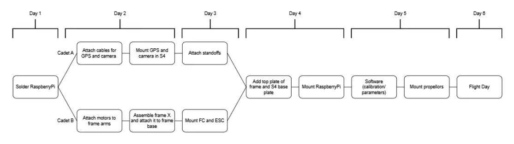

Day 1
Ready now
Task 1: Solder Raspberry Pi
Install the latch-style 4-pin header and the SIP switch on the Raspberry Pi Zero 2 W before anything is mounted to the airframe.
Blockers: None
Cadet-facing build instructions for the High Agility Multirotor II sUAS. This edition uses the same visual language as the finalized builder site, but splits the manual into manageable task pages.
Use this manual at the bench while building the aircraft. This edition is split into one task per page, shows blockers so cadets can see what can be done early, and adds hover previews for each dotted-underlined part, tool, and fastener mention.

Tasks with no blockers can be started immediately. Tasks marked blocked depend on one or more earlier tasks.
Install the latch-style 4-pin header and the SIP switch on the Raspberry Pi Zero 2 W before anything is mounted to the airframe.
Blockers: None
Install the camera, cable, GPS module, and standoffs on the sensor suite superstructure before it is mated to the base plate.
Blockers: None
Cadet B builds the lower airframe using the Lumenier frame kit while keeping the FC/ESC stack screws aside for later.
Blockers: None
Mount all four motors to the arms using the short motor screws from the EMAX motor kits.
Blockers: Task 3B: Assemble the lower frame
Build the ARK ESC / ARK FPV flight-controller stack on the lower frame, attach the battery lead, and connect the motors to the ESC.
Blockers: Task 3B: Assemble the lower frame · Task 4: Install the motors
Merge the Cadet B lower frame with the top plate and the 3-D printed sensor-suite base plate.
Blockers: Task 5: Install the ESC and flight controller stack
Mount the Raspberry Pi on the sensor-suite base plate before the superstructure is attached.
Blockers: Task 1: Solder Raspberry Pi · Task 6: Install the vehicle top plate and sensor-suite base plate
Mate the superstructure to the base plate, connect the camera cable, route the GPS lead, and connect the custom FC-to-RPi harness.
Blockers: Task 2A: Build the sensor suite superstructure · Task 7: Install the Raspberry Pi
Connect Mission Planner, set the frame type, and verify motor order and direction before propellers ever go on.
Blockers: Task 8: Install the sensor suite and connect the wiring
Load the current faculty-issued preset parameter file after the aircraft is fully wired.
Blockers: Task 9: Software setup and motor test
Run accelerometer and compass calibration, then enter the measured total battery voltage.
Blockers: Task 10: Load preset parameters
Install the correct CW and CCW propellers only after motor test and software setup are complete.
Blockers: Task 11: Sensor calibration
The workflow chart ends with Flight Day. Before an aircraft is handed off for its first prop-on run or flight event, confirm the items below.
Blockers: Task 12: Mount the propellers
Use this when you want to draft a new task or rewrite a vague one in the same style as this manual.
Use the button below for a copyable template plus an example of a well-written single step.